Sport
Toate articolele Fără Baliverne din sport: rezultate, cifre și afirmații verificate.
43 articole, cele mai noi întâi.
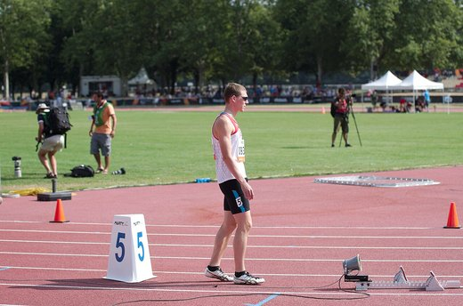
Zverev îl elimină pe Khachanov și ajunge în a doua finală de Grand Slam din 2026 — așteaptă câștigătorul dintre Shelton și Tiafoe
Alexander Zverev l-a învins pe Karen Khachanov cu 6-3, 7-6(7), 7-6(6) în semifinalele US Open 2026, pe 11 septembrie, și s-a calificat în a doua sa finală de…
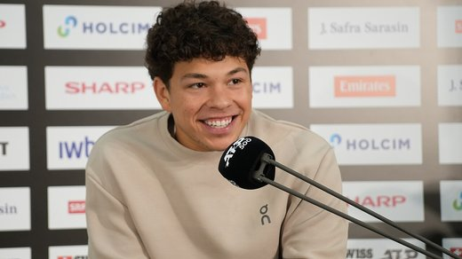
Ben Shelton îl elimină pe Carlos Alcaraz în cel mai târziu meci din istoria US Open — finală garantată cu doi americani în semifinală, premieră după 23 de ani
Ben Shelton l-a învins pe campionul en-titre Carlos Alcaraz cu 6-7, 6-1, 6-3, 1-6, 7-6, într-un sfert de finală încheiat la 3:33 dimineața (ora New…

Djokovic, eliminat în turul 1 la US Open de Mariano Navone — cade un streak de 78 de victorii consecutive și unul de 23 de ani pentru „Big Three”
Novak Djokovic a pierdut, pe 30 august 2026, meciul din turul 1 al US Open cu argentinianul Mariano Navone (locul 49 ATP), scor 6-7(5-7), 7-5, 6-4, 2-6, 1-6…
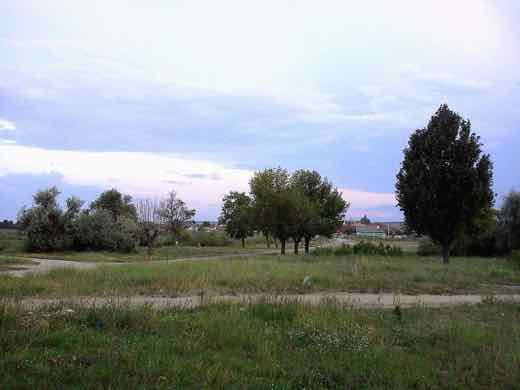
Universitatea Craiova, eliminată din Europa League de Ararat-Armenia, cu un penalty repetat în minutul 90+8
Ararat-Armenia a învins-o pe Universitatea Craiova cu 1-0 în manșa retur a play-off-ului Europa League, joi, 27 august 2026, cu un gol marcat din penalty…
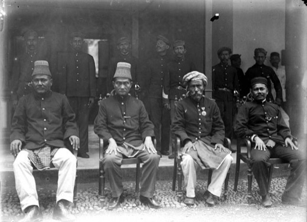
Patru românce intră direct pe tabloul principal la US Open 2026 — Sorana Cîrstea, cap de serie 17
Sorana Cîrstea (locul 17 WTA), Jaqueline Cristian (41), Gabriela Ruse (73) și Irina Begu (82, cu ranking protejat după accidentare) au intrat direct pe…
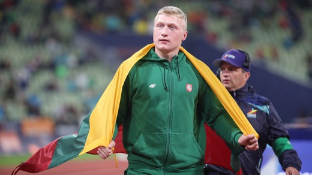
Mykolas Alekna doboară recordul Diamond League la disc, cu 72,58 metri la Silesia
Discobolul lituanian Mykolas Alekna a aruncat 72,58 metri duminică, 23 august 2026, la Memorialul Kamila Skolimowska din Silesia (Chorzów, Polonia) — un nou…
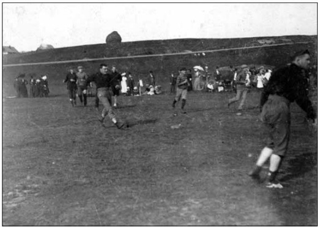
Dinamo învinge Universitatea Cluj 2-1, în inferioritate numerică, și devine lider în SuperLiga
Dinamo a învins-o pe Universitatea Cluj cu 2-1, sâmbătă, 22 august 2026, în etapa a 6-a din SuperLiga, deși a jucat în 10 oameni din minutul 67. Victoria o…
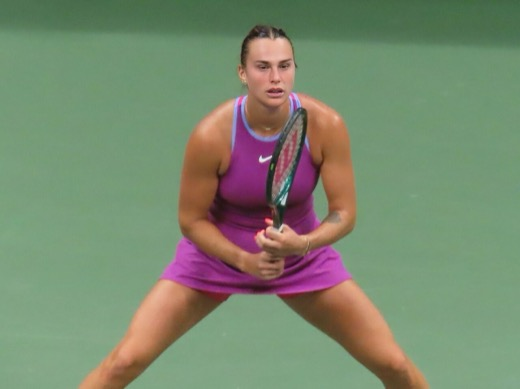
Sabalenka, eliminată la Cincinnati de cehoaica Sara Bejlek — riscă să piardă locul 1 mondial în fața Rybakinei
Aryna Sabalenka, numărul 1 mondial de 96 de săptămâni consecutive, a fost eliminată în turul al patrulea (optimi) de la Cincinnati de cehoaica Sara Bejlek…

Sorana Cîrstea, eliminată în optimi la Cincinnati de Jessica Pegula, după un meci de peste două ore în trei seturi
Sorana Cîrstea (36 de ani, 19 WTA, cap de serie 15) a cedat în fața americancei Jessica Pegula (a treia jucătoare a lumii), scor 6-2, 4-6, 7-5, în optimile…

Sorana Cîrstea s-a calificat în optimi la Cincinnati, după abandonul Annei Kalinskaya — o așteaptă Jessica Pegula
Sorana Cîrstea (36 de ani, cap de serie 15) a trecut de rusoaica Anna Kalinskaya, scor 6-7(4), 6-1, 5-0, meciul fiind întrerupt de mai multe ori de ploaie și…
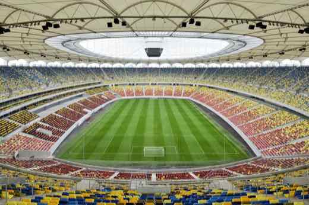
FCSB învinge Botoșani 3-2, cu golul decisiv al lui Bîrligea în minutul 90+6 — urcă pe primul loc în Superliga
FCSB a învins pe FC Botoșani cu 3-2, luni 17 august 2026, în etapa a 5-a din Superliga. Au marcat Joao Paulo (10') și Daniel Bîrligea (63', 90+6) pentru…
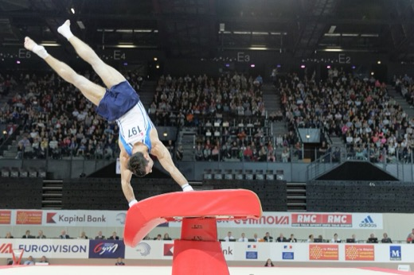
Aniela Tudor, 15 ani, aduce României aurul la sărituri, la Campionatele Europene de gimnastică de la Zagreb
Gimnasta română Aniela Tudor (15 ani, legitimată la Dinamo București) a câștigat, duminică, 16 august 2026, medalia de aur la sărituri în finala junioarelor…
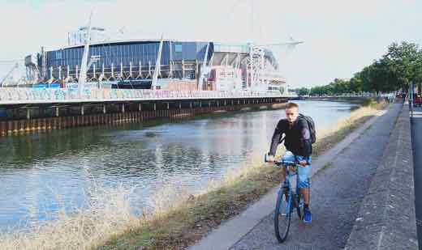
Arsenal învinge Manchester City 3-0 în FA Community Shield — primul meci al lui Enzo Maresca pe banca „cetățenilor”
Arsenal a învins Manchester City cu 3-0 duminică, 16 august 2026, la Cardiff, în FA Community Shield — trofeul care deschide sezonul de fotbal englez…
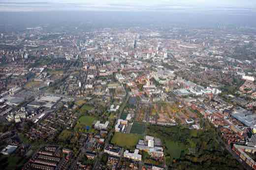
Barcelona și Manchester City ar fi convenit un transfer de 76,5 milioane de euro pentru Rodri — cluburile nu au confirmat oficial
Surse citate de Associated Press și ESPN spun că Manchester City și FC Barcelona au ajuns la un acord de aproximativ 76,5 milioane de euro pentru transferul…
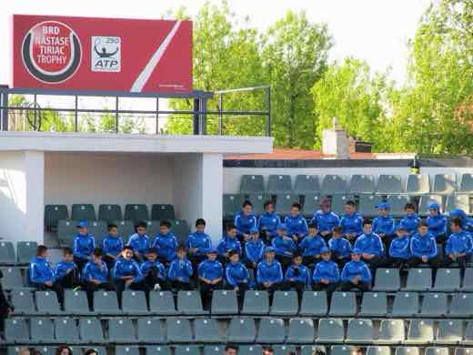
Becali refuză 1,2 milioane de euro din Egipt pe Joao Paulo: „Nu sunt cioflingar”
Cluburile egiptene Al-Ahly și Zamalek au ofertat 1,2 milioane de euro pentru mijlocașul FCSB-ului Joao Paulo, evidențiat la Cupa Mondială 2026 cu naționala…
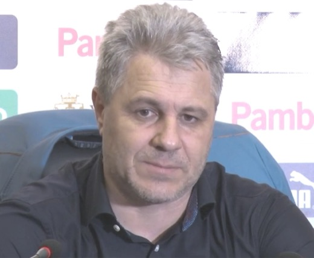
Debut dezastruos pentru Șumudică la CFR Cluj: nou-promovata Corvinul Hunedoara învinge cu 3-0
În etapa a 5-a din Superliga României, nou-promovata Corvinul Hunedoara a învins CFR Cluj cu 3-0, chiar la meciul de debut al lui Marius Șumudică în a doua…
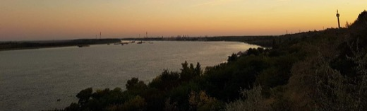
Oțelul Galați – Universitatea Craiova 1-1: campioana a jucat peste o oră în 10 oameni, egalul a venit în minutul 87
În etapa a 5-a din SuperLiga, Oțelul Galați a remizat duminică, 16 august 2026, scor 1-1, cu campioana en-titre Universitatea Craiova, care a jucat peste o…

Alertă de securitate la Europenele de atletism de la Birmingham: un bărbat arestat pentru fraudă, mii de spectatori blocați peste o oră
Sâmbătă seara, 15 august 2026, un bărbat de circa 30 de ani a fost arestat la Alexander Stadium, suspectat de fraudă, după ce purta o acreditare care nu îi…
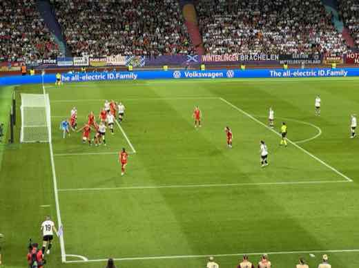
Bayern München a câștigat al treilea Supercup feminin consecutiv, 3-0 cu VfL Wolfsburg
Sâmbătă, 15 august 2026, la Ingolstadt, echipa feminină a lui Bayern München a învins-o pe VfL Wolfsburg cu 3-0 în finala Supercupului german, al treilea…
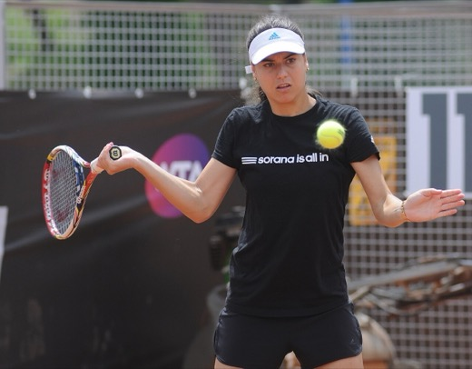
Sorana Cîrstea s-a calificat în turul trei la Cincinnati, după o victorie în trei seturi cu Nikola Bartunkova
Sorana Cîrstea (36 de ani, cap de serie 15) a învins-o pe cehoaica Nikola Bartunkova, scor 7-6(5), 6-3, în aproape două ore de joc, și s-a calificat în turul…
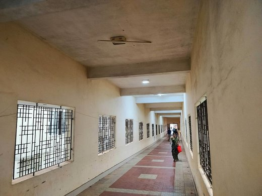
Novak Djokovic, eliminat surprinzător la Cincinnati de Thiago Tirante, după ce a vomitat pe teren în condiții de caniculă
Sâmbătă, 15 august 2026, Novak Djokovic a fost eliminat în turul 2 la Cincinnati Open de argentinianul Thiago Agustín Tirante, scor 2-6, 6-4, 6-4, după ce a…

Rapid – Dinamo 0-1: Daniel Pancu eliminat în minutul 54, Basarab Panduru spune că scorul „nu reflectă” jocul de pe teren
Dinamo a învins Rapidul cu 1-0 pe 15 august 2026, în etapa a V-a din Superligă, cu un gol marcat de Karamoko. Antrenorul Rapidului, Daniel Pancu, a fost…
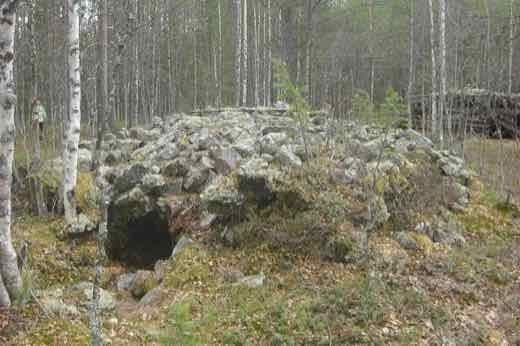
Ramona Verman s-a calificat în finala săriturii în lungime la Europenele de atletism de la Birmingham
Alina Ramona Verman s-a calificat sâmbătă, 15 august 2026, în finala săriturii în lungime de la Campionatele Europene de atletism de la Birmingham, cu o…
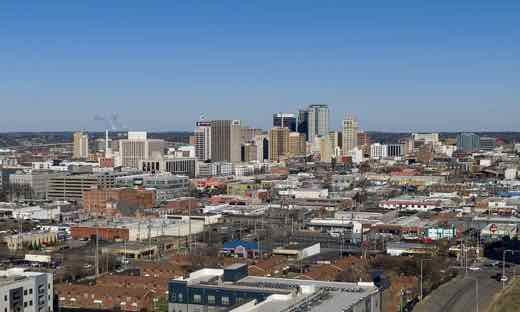
Europenele de atletism de la Birmingham: Audrey Werro o învinge pe campioana olimpică Hodgkinson la 800m, Warholm și Tamberi câștigă al patrulea titlu european consecutiv
Vineri, 14 august 2026, la Campionatele Europene de atletism de la Birmingham (Alexander Stadium), elvețianca Audrey Werro a câștigat finala de 800m cu…

A murit Jessica Bang, golferistă profesionistă australiană de 18 ani, după o hemoragie cerebrală în Thailanda
Jessica Bang, golferistă profesionistă australiană în vârstă de 18 ani, a murit joi, 13 august 2026, într-un spital din Bangkok, la aproape două săptămâni…
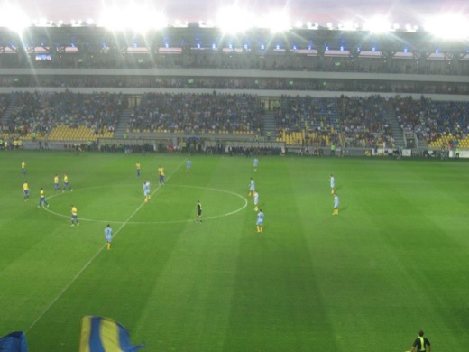
Petrolul urcă pe locul 2 în SuperLiga, după 2-1 cu FC Voluntari, în etapa a 5-a
Petrolul Ploiești a învins FC Voluntari cu 2-1, vineri, 14 august 2026, în etapa a 5-a din SuperLiga, prin golurile lui Bran (Flores), din penalty, și…
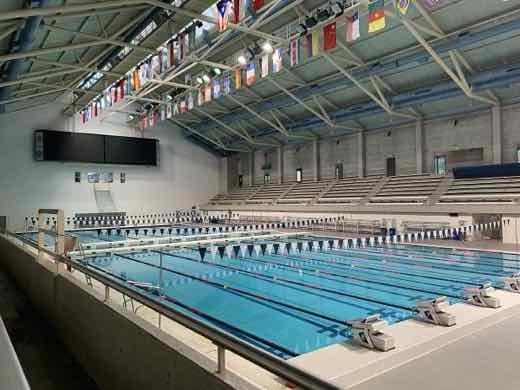
David Popovici, dubla istorică — primul înotător din istorie cu aur la 100m și 200m liber la trei ediții europene consecutive
David Popovici a câștigat vineri, 14 august 2026, aurul la 200m liber la Campionatele Europene de la Paris, cu timpul 1:44,15 — la o zi după ce luase deja…

Universitatea Craiova – KuPS 2-1: oltenii întorc scorul și se califică în play-off-ul Europa League, 3-2 la general
Universitatea Craiova a învins-o pe finlandezii de la KuPS Kuopio cu 2-1, joi seară, pe Ion Oblemenco, în manșa retur a turului 3 preliminar Europa League…
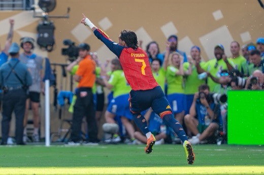
Ferran Torres, aproape de PSG: acord de circa 50 de milioane de euro cu Barcelona, dar transferul rămâne condiționat de vizita medicală
Paris Saint-Germain și FC Barcelona au ajuns la un acord verbal pentru transferul atacantului spaniol Ferran Torres, în schimbul a aproximativ 50 de milioane…
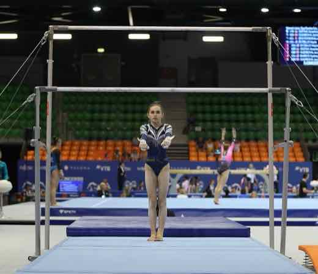
Gimnastică: România, locul 11 la Europenele de la Zagreb — Sabrina Voinea, scoasă din finala de la bârnă după o contestație a propriei antrenoare
Echipa feminină de gimnastică a României a încheiat calificările Campionatului European de la Zagreb pe locul 11, fără nicio calificare individuală în finale…

David Popovici, cel mai bun timp din semifinalele la 200m liber — se califică în finala de vineri, la Campionatele Europene de la Paris
David Popovici a înotat 1:44,56 în semifinala 200m liber de joi, 13 august, cel mai bun timp din toate cele 16 semifinaliste — cu o zi înainte câștigase…
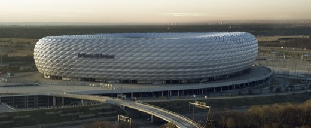
PSG a învins Aston Villa 2-1 și a păstrat Supercupa Europei — al doilea trofeu la rând, gol validat de VAR în minutul 61
🌍 Paris Saint-Germain a câștigat Supercupa Europei 2026, 2-1 în fața lui Aston Villa, la Salzburg — al doilea trofeu consecutiv, performanță reușită anterior…

România, cel mai bun parcurs din ultimele decenii la baschet U16 — oprită de Franța în sferturi, 69-108
Naționala masculină U16 a României, gazdă a FIBA U16 EuroBasket 2026 la Oradea, a fost eliminată în sferturile de finală de Franța, 69-108, pe 12 august 2026…
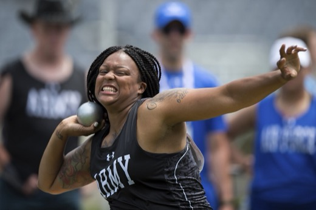
Rareș Toader, locul 5 la aruncarea greutății, la Campionatele Europene de Atletism de la Birmingham
Aruncătorul de greutate Rareș „Andrei” Toader a terminat pe locul 5 în finala de la Campionatele Europene de Atletism de la Birmingham, cu 20,80 m — cea mai…
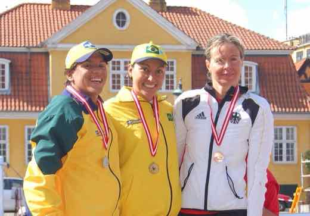
Denis Popescu doboară recordul național la 100 m fluture la Europenele de la Paris, dar ratează finala
Denis-Laurean Popescu a înotat 51.44 secunde în seriile de 100 m fluture de la Campionatele Europene de la Paris (12 august 2026), doborând vechiul record…

David Popovici ia aurul la 100 m liber la Europenele de la Paris, cu un nou record al competiției — al treilea titlu la rând
În finala de miercuri seară de la Campionatele Europene de la Paris, David Popovici a câștigat aurul la 100 m liber cu timpul de 46,56 secunde — cel mai bun…

Dinamo zdrobește FC Voluntari, 4-0, în etapa a 4-a din SuperLiga
Sâmbătă, 8 august 2026, Dinamo București a învins categoric FC Voluntari, scor 4-0, în etapa a 4-a din SuperLiga. Poziția exactă a lui Dinamo în clasament…

Sepsi OSK și FCSB rămân la egalitate, 0-0, în etapa a 4-a din SuperLiga
Luni, 10 august 2026, Sepsi OSK Sfântu Gheorghe și FCSB au terminat la egalitate, 0-0, în meciul care a închis etapa a 4-a din SuperLiga. Sepsi a avut…
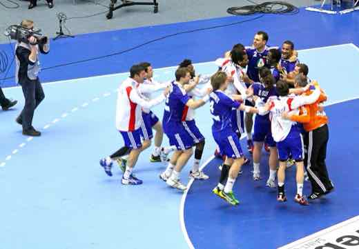
România a câștigat M18 EHF Championship 2026 la handbal masculin, învingând Lituania 32-23 în finală
Naționala masculină de handbal U18 a României a câștigat, pe 10 august 2026 la Skopje, M18 EHF Championship 2026 — al doilea eșalon al Campionatului European…

FC Argeș învinge campioana en-titre Universitatea Craiova, 0-1, și urcă pe primul loc în SuperLiga
Duminică, 9 august 2026, FC Argeș a câștigat 0-1 pe terenul campioanei en-titre Universitatea Craiova, în etapa a 4-a din SuperLiga, cu un gol marcat de…
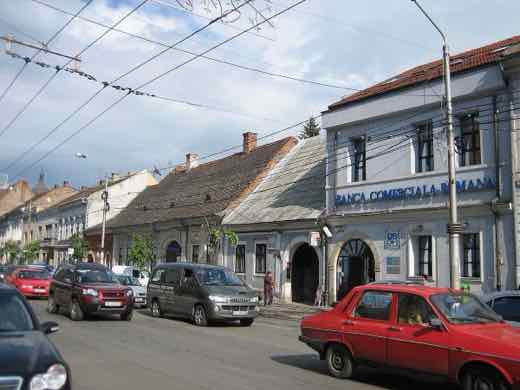
CFR Cluj – Tromsø 0-5 în Gruia: umilință în turul 3 preliminar al Conference League, returul e pe 13 august
Pe 6 august 2026, în manșa tur a turului 3 preliminar al Conference League, CFR Cluj a fost învinsă acasă, în Gruia, cu 0-5 de norvegienii de la Tromsø…
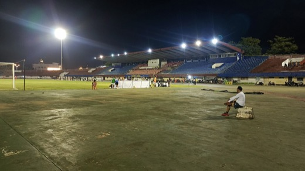
KuPS – Universitatea Craiova 1-1: campioana României a scos un egal în Finlanda, returul e pe 13 august
În turul 3 preliminar al Europa League, Universitatea Craiova a remizat 1-1 la Kuopio: Baiaram a deschis scorul, finlandezii de la KuPS au egalat prin…

David Popovici, în fața unui record istoric la Europenele de la Paris: ce se probează și ce ține de viitor
La Campionatele Europene de nataţie de la Paris (10–16 august 2026), David Popovici poate deveni primul înotător care câştigă dubla 100 m + 200 m liber la…